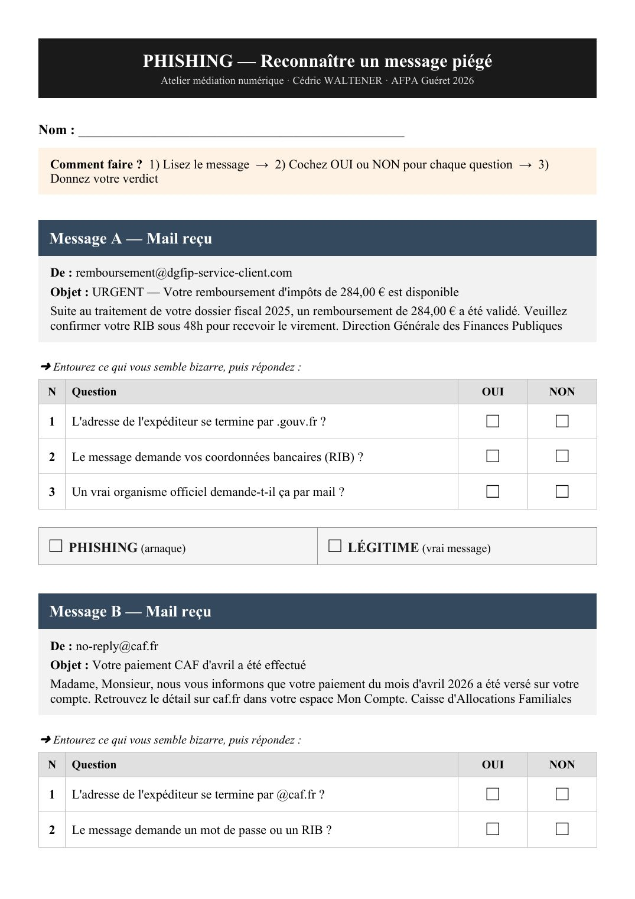
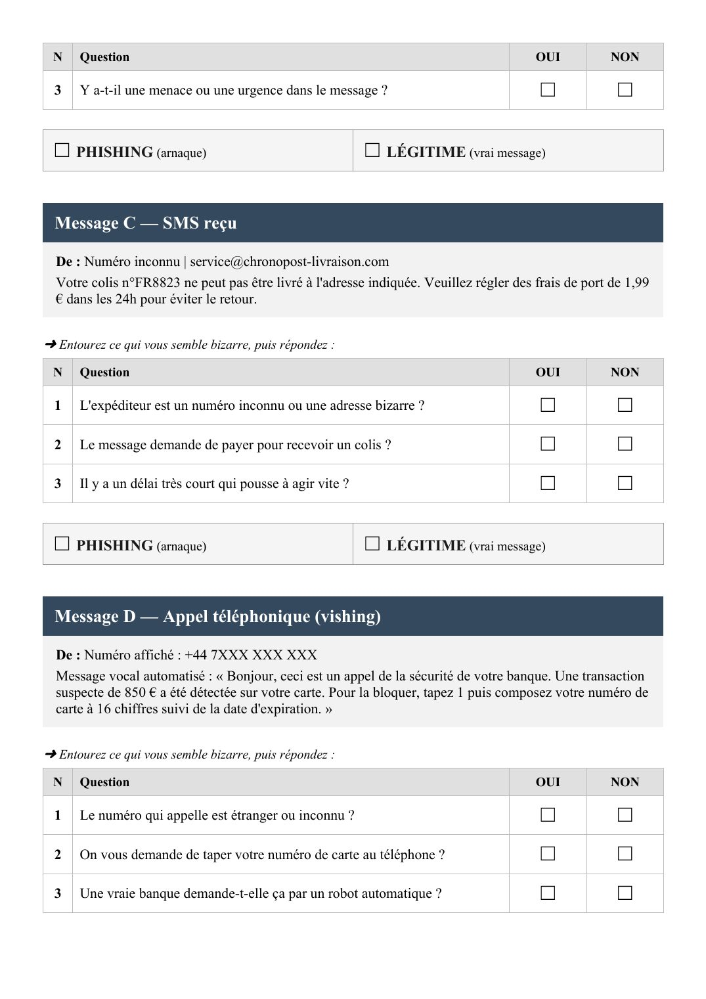
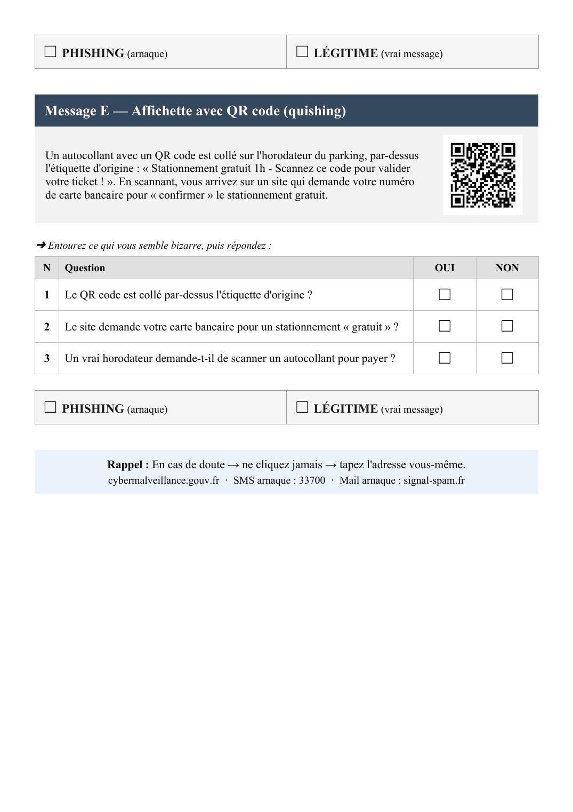

⏳ Vérification de votre niveau…



📄 Texte de la page (traduisible — les images ci-dessus restent en français)
PHISHING — Reconnaître un message piégé Atelier médiation numérique · Cédric WALTENER · AFPA Guéret 2026
Nom : _______________________________________________
Comment faire ? 1) Lisez le message → 2) Cochez OUI ou NON pour chaque question → 3) Donnez votre verdict
Message A — Mail reçu
De : remboursement@dgfip-service-client.com Objet : URGENT — Votre remboursement d'impôts de 284,00 € est disponible Suite au traitement de votre dossier fiscal 2025, un remboursement de 284,00 € a été validé. Veuillez confirmer votre RIB sous 48h pour recevoir le virement. Direction Générale des Finances Publiques
➜ Entourez ce qui vous semble bizarre, puis répondez : N Question OUI NON
1 L'adresse de l'expéditeur se termine par .gouv.fr ? ☐ ☐ 2 Le message demande vos coordonnées bancaires (RIB) ? ☐ ☐ 3 Un vrai organisme officiel demande-t-il ça par mail ? ☐ ☐
☐ PHISHING (arnaque) ☐ LÉGITIME (vrai message)
Message B — Mail reçu
De : no-reply@caf.fr Objet : Votre paiement CAF d'avril a été effectué Madame, Monsieur, nous vous informons que votre paiement du mois d'avril 2026 a été versé sur votre compte. Retrouvez le détail sur caf.fr dans votre espace Mon Compte. Caisse d'Allocations Familiales
➜ Entourez ce qui vous semble bizarre, puis répondez : N Question OUI NON
1 L'adresse de l'expéditeur se termine par @caf.fr ? ☐ ☐ 2 Le message demande un mot de passe ou un RIB ? ☐ ☐
N Question OUI NON
3 Y a-t-il une menace ou une urgence dans le message ? ☐ ☐
☐ PHISHING (arnaque) ☐ LÉGITIME (vrai message)
Message C — SMS reçu
De : Numéro inconnu | service@chronopost-livraison.com Votre colis n°FR8823 ne peut pas être livré à l'adresse indiquée. Veuillez régler des frais de port de 1,99 € dans les 24h pour éviter le retour.
➜ Entourez ce qui vous semble bizarre, puis répondez : N Question OUI NON
1 L'expéditeur est un numéro inconnu ou une adresse bizarre ? ☐ ☐ 2 Le message demande de payer pour recevoir un colis ? ☐ ☐ 3 Il y a un délai très court qui pousse à agir vite ? ☐ ☐
☐ PHISHING (arnaque) ☐ LÉGITIME (vrai message)
Message D — Appel téléphonique (vishing)
De : Numéro affiché : +44 7XXX XXX XXX Message vocal automatisé : « Bonjour, ceci est un appel de la sécurité de votre banque. Une transaction suspecte de 850 € a été détectée sur votre carte. Pour la bloquer, tapez 1 puis composez votre numéro de carte à 16 chiffres suivi de la date d'expiration. »
➜ Entourez ce qui vous semble bizarre, puis répondez : N Question OUI NON
1 Le numéro qui appelle est étranger ou inconnu ? ☐ ☐ 2 On vous demande de taper votre numéro de carte au téléphone ? ☐ ☐ 3 Une vraie banque demande-t-elle ça par un robot automatique ? ☐ ☐
☐ PHISHING (arnaque) ☐ LÉGITIME (vrai message)
Message E — Affichette avec QR code (quishing)
Un autocollant avec un QR code est collé sur l'horodateur du parking, par-dessus l'étiquette d'origine : « Stationnement gratuit 1h - Scannez ce code pour valider votre ticket ! ». En scannant, vous arrivez sur un site qui demande votre numéro de carte bancaire pour « confirmer » le stationnement gratuit.
➜ Entourez ce qui vous semble bizarre, puis répondez : N Question OUI NON
1 Le QR code est collé par-dessus l'étiquette d'origine ? ☐ ☐ 2 Le site demande votre carte bancaire pour un stationnement « gratuit » ? ☐ ☐ 3 Un vrai horodateur demande-t-il de scanner un autocollant pour payer ? ☐ ☐
☐ PHISHING (arnaque) ☐ LÉGITIME (vrai message)
Rappel : En cas de doute → ne cliquez jamais → tapez l'adresse vous-même. cybermalveillance.gouv.fr · SMS arnaque : 33700 · Mail arnaque : signal-spam.fr